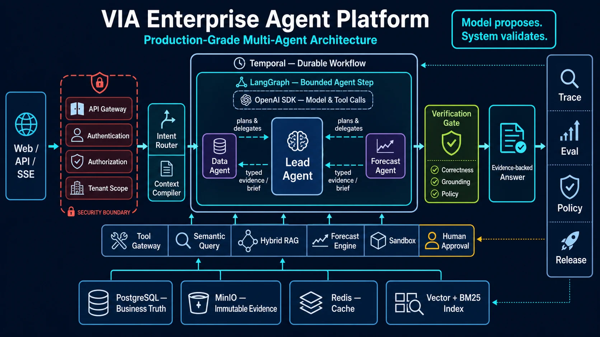
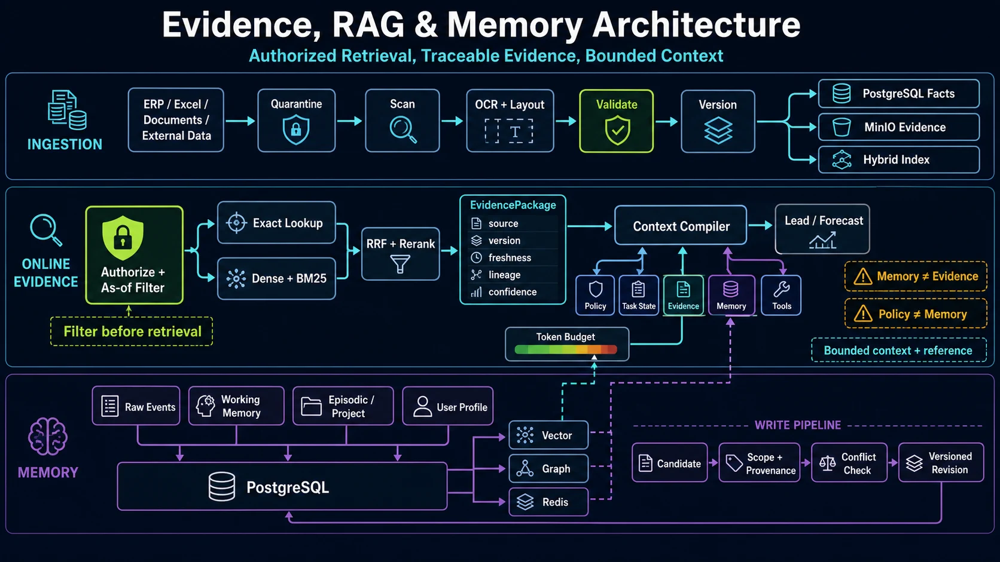
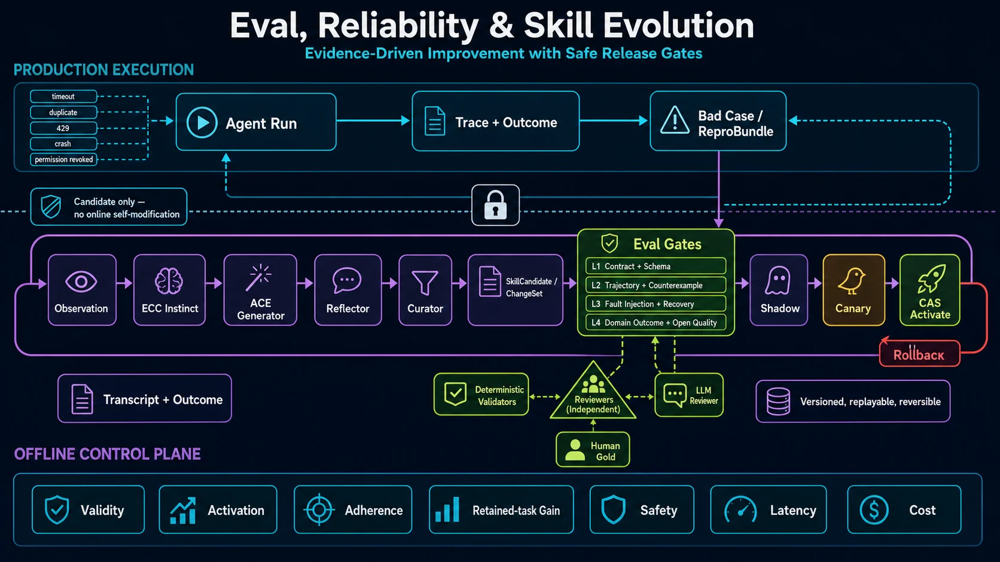
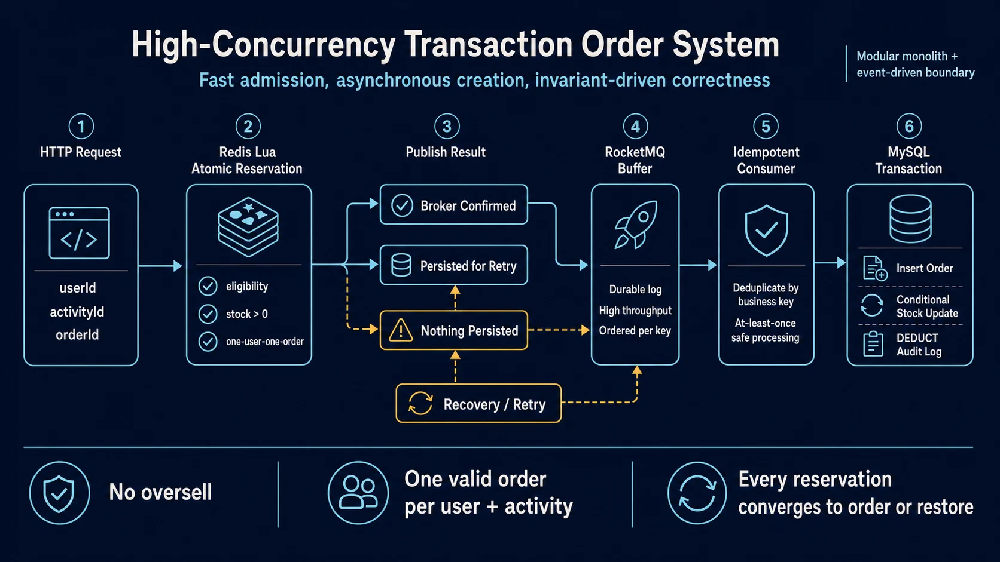
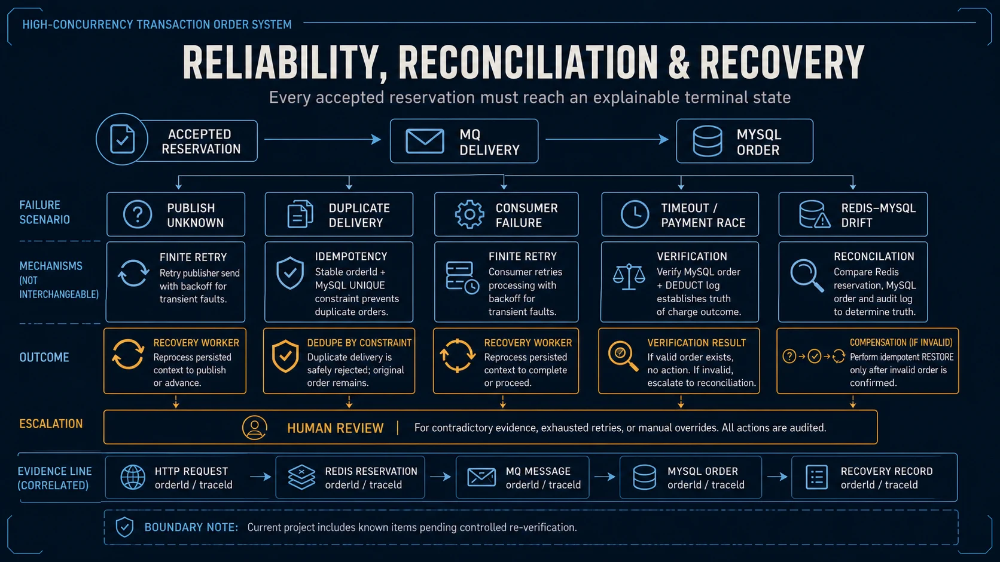
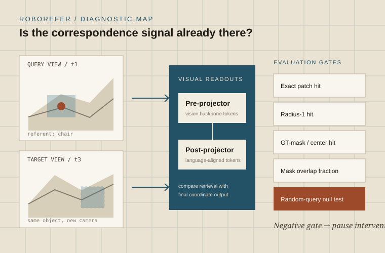
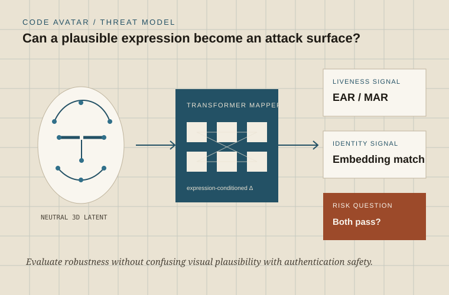

Yanfeng Automotive Interiors — Software Engineer Intern
Corporate Strategy. Architecture and core engineering of VIA, an enterprise AI decision platform.
Novi, Michigan · May 2026 – Aug 2026
Software engineer · Backend & AI systems
New York · NYU M.S. ’27 · Open to 2027 new-grad roles
I build backends and AI systems — and make sure they’re actually correct.
Long-running tasks that recover, with evaluation gates and safe releases.
Workflow → State → Evaluation → ReleaseInventory consistency, asynchronous orders, and recovery when things fail.
API → Inventory → Queue → OrderTurn inspection feedback into better data, post-training, and evaluation.
Data → ETL → Post-training → Evaluation ↺Places & people
Five cities. Hover to explore.
01 / VIA · Yanfeng · Summer 2026
An enterprise agent platform that turns scattered business data into cited, auditable decision briefs.
I owned the architecture, the agent run plane, retrieval and the evaluation gates, working in Corporate Strategy with a small team.
Python · FastAPI · PostgreSQL · LangGraph · Temporal · Redis · MinIO
Recall, context recall and answer faithfulness scored separately — a confident answer on the wrong evidence still fails.



The system permitted 24 tool calls, but the 24k-character context budget physically held about six full results. Everything after that was silently truncated, and the evidence gate was confidently ruling on partial data. Fixed with an artifact store holding full results outside the context, a bounded projection, and a manifest recording exactly which ranges were dropped.
Agents propose; the plane executes. Every step carries a typed contract — inputs, declared capability, expected output shape, idempotency key — and a step whose declared capability does not cover its action is refused.
Hybrid retrieval — lexical matching for exact identifiers, dense retrieval for paraphrase, RRF fusion and cross-encoder reranking enabled per query by risk and latency budget rather than globally. Recall went from 0.58 to 0.90 at 381 → 911 ms, and that trade-off is visible in the evaluation report, not hidden.
02 / Seckill Plus · Capgemini · 2024
Keep flash-sale orders correct when all the traffic arrives at once.
I owned the write path, messaging reliability and cross-store recovery, plus two framework components the team reused.
Java · Spring Boot · Redis (Lua) · RocketMQ · MySQL
Load test · 4,000 requests


A three-state reliable-publish protocol: synchronous send backed by a local transaction table, failed messages persisted and retried by a scheduled job, consumers made idempotent by business key. Plus order-to-inventory reconciliation with compensating writes, because a protocol that assumes it is never wrong has no recovery path when it is.
A Redis Lua script reserves inventory and enforces one-order-per-user atomically in a single round trip. RocketMQ absorbs the burst off the synchronous path, MySQL holds transaction truth, and a multi-level cache defends hot keys against breakdown, penetration and avalanche.
The product-detail and scoring chains were nested CompletableFuture.thenCombine — execution order encoded in the call structure, so nothing could be reordered, timed out per node, or tuned. I replaced them with an annotation-driven orchestration engine where a node declares its stage, ordering and serial-versus-parallel mode, and removed the shared-context data race by giving each branch its own copy, merged at the join under an explicit per-key ownership rule.
03 / Production vision · NIO · 2024
Bring automated visual inspection closer to senior inspectors’ judgment, and prove it on the line.
I owned post-training and the evaluation loop, and partnered with the line team on deployment.
PyTorch · LoRA SFT + DPO · TensorRT · Docker
≥ 98% precision and recall on two defect classes · ~90% of line inspection time covered
The held-out set shared batches, stations and time windows with training, so offline numbers flattered the model. Rebuilt the loop with model-assisted pre-labeling, uncertainty and class-conflict routing for human adjudication, and hidden shadow evaluation grouped by batch, station and time — so a number only counts if it survives conditions the model has not seen.
Post-trained the decision model with LoRA SFT followed by DPO on inspector accept/reject pairs, raising agreement with senior inspectors from 76% to 91%.
Deployed with Docker and TensorRT mixed precision — INT8 backbone, FP16 regression heads — at roughly 28 ms per frame and 25 FPS, holding ≥98% precision and recall on two defect classes, with cross-station drift monitoring.
04 / Jarvis · Personal · Running daily since Sep 2026
A reading pipeline that pulls GitHub Trending, Hugging Face papers and arXiv every day, scores each item against my interest profile, and writes a Chinese brief with prerequisites, mechanism diagram and an honest verdict.
Designed, built and run solo — the third rewrite since May 2026 (v1, v2). Runs unattended on GitHub Actions at 12:00 New York; notes land in Obsidian.
Python · GitHub Actions · OpenAI (nano for scoring, mini for briefs) · Obsidian · a deep-read skill for Claude
Live numbers from the latest run · updated 2026-09-15
Trending gets an item into the candidate pool and nothing more. It is published only after hard filters, an LLM score against a written interest profile, and a brief that has to name the counter-intuitive point, the key mechanism and the strongest evidence. A day with nothing good publishes less, or nothing — the pipeline is allowed to be quiet.
Three to five hundred scoring calls a day go to the smallest model; only the eighteen survivors get a brief from a stronger one. Roughly 100–150k input tokens a day, $3–6 a month — cheap enough to never think about turning it off.
A known.md profile lists the concepts I can already explain; the deep-read skill skips them and the daily brief flags which prerequisites I still need. Concepts learned in a session are written back, so the profile is also the progress bar.
Reading
Every node comes from a Jarvis brief. Rust-coloured nodes are my own systems; pick one to see the concepts it rests on.
Briefs are drafted by the pipeline from the source; the reading standard, the concept map and the links to my own systems are mine.
Read until you can rebuild it on a whiteboard — the structure, where it is strong, what it quietly assumes, where it breaks. Knowing what the layers are is table stakes; the note has to reach design decisions, mechanism, and why.
Every paper note must answer five questions:
Every statement is tagged by how much to trust it:
Repositories are judged by maturity and against their peers, not by feature lists. Limitations get at most 15% of the note; the bulk is problem, mechanism and evidence.
Original standard (Chinese) ↗Notes
On building, learning and life in New York.
Written in Chinese on Xiaohongshu.
Xiaohongshu ID · 2063539021ykw
NYU research

Does a multimodal model recognise the same object across camera views — and is the correspondence signal already in its visual tokens before we retrain anything?

Can a facial-expression change move cleanly through latent space and transfer across identities — and what does that mean for liveness checks?
Experience
Education, research and internships. Back to the globe ↑
Yanfeng Automotive Interiors — Software Engineer Intern
Corporate Strategy. Architecture and core engineering of VIA, an enterprise AI decision platform.
Novi, Michigan · May 2026 – Aug 2026
New York University — Research Assistant
RoboRefer cross-view consistency and ESCA latent-space expression experiments, alongside the M.S. in Computer Engineering.
New York · Sep 2025 – present
Capgemini — Backend Software Engineer Intern
Java. Transaction path, messaging reliability and two reusable framework components for Seckill Plus.
Shanghai · Aug 2024 – Sep 2024
NIO — Machine Learning Engineer Intern
Advanced Manufacturing Engineering. Post-training, evaluation loop and deployment for visual inspection.
Shanghai · May 2024 – Jul 2024
VisionNav Robotics — AI Algorithm Engineer Intern
Autonomous forklift perception: point-cloud segmentation, registration and obstacle recognition with Open3D; datasets built from 140 GB+ of data. Contributed to BrightEye.
Shenzhen · Jul 2023 – Aug 2023
The Chinese University of Hong Kong — B.Eng. Computer Engineering
Undergraduate degree, Faculty of Engineering.
Hong Kong · Sep 2021 – Jun 2025
Toolkit
Education
New York University
M.S. Computer Engineering
New York · Sep 2025 – May 2027
The Chinese University of Hong Kong
B.Eng. Computer Engineering
Hong Kong · Sep 2021 – Jun 2025